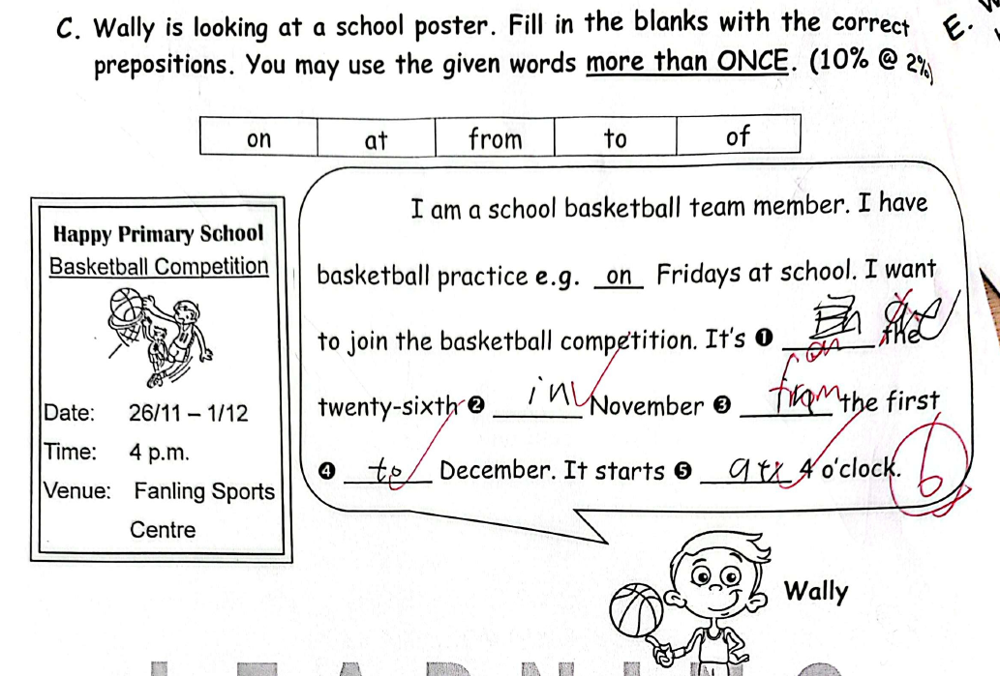
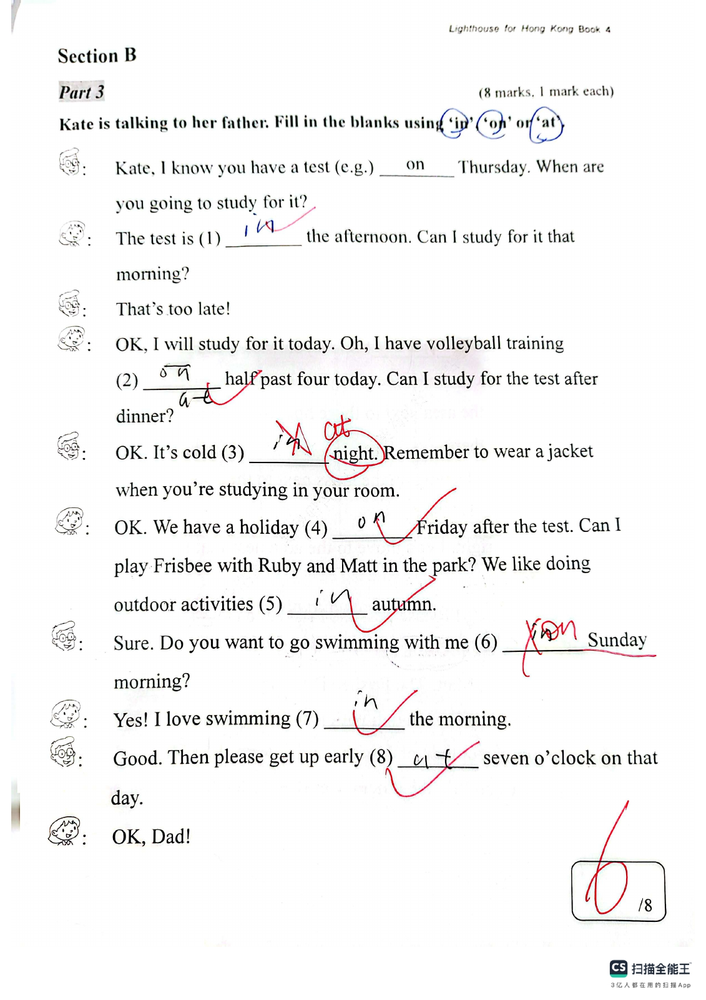
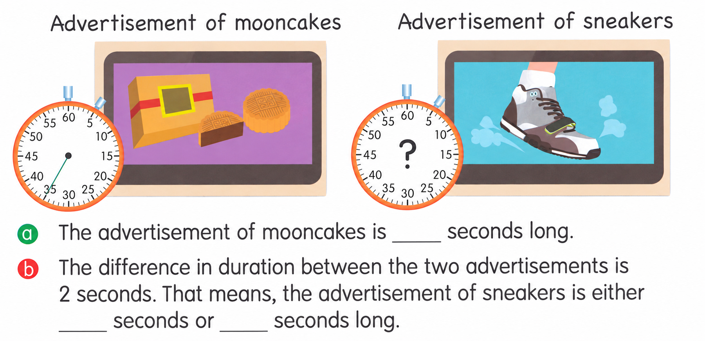

Answer: (a) 93 mm; (b) 43 mm; (c) 37 mm; (d) the torch (first picture); (e) 6 mm, longer
已掌握
| # | 单词/词组 | 中文意思 | 例句/说明 | 已掌握 |
|---|---|---|---|---|
| noun 名词 | ||||
| 1 | hotel | 酒店 | We stayed in a hotel. | |
| 2 | garden | 花园 | We play in the garden. | |
| 3 | pet | 宠物 | My pet is a hamster. | |
| 4 | fur | 皮毛 | The rabbit has soft fur. | |
| 5 | robot | 机器人 | The robot can move. | |
| 6 | group | 小组 | We work in a group. | |
| 7 | nurse | 护士 | The nurse helps patients. | |
| 8 | Monday | 周一 | I have an English lesson on Monday. | |
| 9 | forest | 森林 | Many animals live in the forest. | |
| 10 | future | 未来 | I will study hard in the future. | |
| 11 | heart | 心 | My heart beats fast. | |
| 12 | doctor | 医生 | The doctor checked my temperature. | |
| 13 | poem | 诗歌 | Read the poem. | |
| 14 | glasses | 眼镜 | He wears glasses. | |
| verb 动词 | ||||
| 15 | celebrate | 庆祝 | We celebrate my birthday. | |
| adjective 形容词 | ||||
| 16 | clever | 聪明的 | She is clever and kind. | |
| conjunction 连词 | ||||
| 17 | because | 因为 | I stay home because it is raining. | |
| uncategorized 未分类 | ||||
| 18 | sweep | 打扫 | Please sweep the floor. | |
| 19 | case | 盒子 | Put your pencils in the case. | |
| 20 | traditional | 传统的 | We eat traditional food at the festival. | |
| # | 单词/词组 | 中文意思 | 例句/说明 | 已掌握 |
|---|---|---|---|---|
| adjective 形容词 | ||||
| 1 | wonderful | 精彩的 | We had a wonderful day. | |
| 2 | brilliant | 聪明的；杰出的 | That is a brilliant idea. | |
| 3 | cheerful | 快乐的；开朗的 | Sarah is cheerful — she always smiles. | |
| 4 | festive | 节日的 | They can also try different festive food such as turkey and Christmas pudding. | |
| noun 名词 | ||||
| 5 | grammar | 语法 | We are learning English grammar. | |
| 6 | fin | 鱼鳍 | A fish has a fin. | |
| 7 | leader | 领导者 | The leader helps the group. | |
| 8 | carpet | 地毯 | The carpet is on the floor. | |
| 9 | phrases | 短语 | These phrases are easy to remember. | |
| 10 | cafe | 咖啡馆 | We had drinks at a cafe. | |
| 11 | present | 礼物 | I gave my friend a birthday present. | |
| 12 | kitten | 小猫 | Milo is playing with a little kitten. | |
| noun phrase 名词短语 | ||||
| 13 | Open Day | 开放日 | Open Day is on 1st March. | |
| 14 | unit price | 单价 | The unit price of each apple is two dollars. | |
| 15 | handicraft lesson | 手工课 | We make paper animals in our handicraft lesson. | |
| verb 动词 | ||||
| 16 | weigh | 称重；重（多少） | We weigh the bag. The bag weighs two kilograms. | |
| 17 | describe | 描述 | I can describe the picture. | |
| 18 | mix | 搅拌；混合 | Mix them together with a fork. | |
| 19 | protect | 保护 | It is very important for us to protect the environment. | |
| 20 | splash | 泼洒；溅 | They splash water onto one another. | |
| 21 | join | 参加，加入 | I would like to join the school choir. | |
| verb phrase 动词短语 | ||||
| 22 | play the recorder | 吹竖笛 | We play the recorder in Music class. | |
| 23 | play with lanterns | 玩灯笼 | We play with lanterns at night. | |
| 24 | take ... for walks | 带……去散步 | I usually take him for walks. | |
| 25 | save energy | 节约能源 | We need to save energy. | |
| uncategorized 未分类 | ||||
| 26 | magician | 魔术师 | The magician made a coin disappear. | |
| 27 | assessment | 测试 | We have a maths assessment on Friday. | |
| 28 | stone | 石头 | I found a smooth stone by the river. | |
| adverb 副词 | ||||
| 29 | often | 经常 | We often recycle things we do not use any more. | |
| time phrase 时间短语 | ||||
| 30 | half past six | 六点半 | I always get up at half past six. | |
| # | 单词/词组 | 中文意思 | 例句/说明 | 已掌握 |
|---|---|---|---|---|
| time/date 时间日期 | ||||
| 1 | June | 六月 | June is the sixth month. | |
| 2 | Monday | 星期一 | Monday is a weekday. | |
| 3 | Friday | 星期五 | Friday is a weekday. | |
| time unit 时间单位 | ||||
| 4 | month | 月 | A month has many days. | |
| directions 方向 | ||||
| 5 | west | 西 | The sun sets in the west. | |
| numbers 数字 | ||||
| 6 | five | 5 | Five is 5. | |
| 7 | ten | 10 | Ten is 10. | |
| ordinal numbers 序数 | ||||
| 8 | third | 第三 | This is the third shape. | |
| solid shape 立体图形 | ||||
| 9 | quadrilateral prism | 四棱柱 | A quadrilateral prism has quadrilateral faces. | |
| 10 | hexagonal prism | 六棱柱 | A hexagonal prism has hexagonal faces. | |
| 11 | triangular pyramid | 三棱锥 | A triangular pyramid has triangular faces. | |
| 12 | hexagonal pyramid | 六棱锥 | A hexagonal pyramid has one hexagonal base and six triangular side faces. | |
| 13 | face | 面 | A cube has six faces. | |
| 14 | curved face | 曲面 | A cylinder has a curved face. | |
| plane shape 平面图形 | ||||
| 15 | Pentagon | 五边形 | A pentagon has five sides. | |
| # | 单词/词组 | 中文意思 | 例句/说明 | 已掌握 |
|---|---|---|---|---|
| operations 运算 | ||||
| 1 | total | 总共的 | Find the total number of apples. | |
| 2 | carrying | 进位 | Carrying helps when the ones make ten. | |
| 3 | be left | 剩下的 | How many apples will be left? | |
| geometry 几何 | ||||
| 4 | perpendicular line | 垂直线 | Perpendicular lines meet at a right angle. | |
| 5 | parallel to each other | 相互平行 | The two lines are parallel to each other. | |
| question word 题目词 | ||||
| 6 | compare | 比较 | We compare two numbers. | |
| 7 | backwards | 向后；倒着 | Count backwards from 20. | |
| comparison 比较 | ||||
| 8 | heavier | 更重的 | A 3 kg bag is heavier than a 2 kg bag. | |
| time/date 时间日期 | ||||
| 9 | hour hand | 时针 | At three o'clock, the hour hand points to 3. | |
| 10 | common year | 平年 | A common year has 365 days. | |
| 11 | large division | 大格（钟面上相邻两个小时数字之间的一格） | The hour hand moves one large division in one hour. | |
| 12 | midnight | 半夜；午夜（凌晨零点） | Midnight is twelve o'clock at night. | |
| position 位置 | ||||
| 13 | back | 后面 | The desk is at the back of the room. | |
| 14 | above | 上面 | The clock is above the board. | |
| 15 | arrow | 箭头 | The arrow points to the right. | |
| operations calculation 运算 | ||||
| 16 | difference | 差 | The difference is the answer in subtraction. | |
| 17 | dividend | 被除数 | The dividend is divided by the divisor. | |
| 18 | quotient | 商 | The quotient is the answer in division. | |
| 19 | divide A by B | A 除以 B | Divide A by B. | |
| currency money 货币 | ||||
| 20 | pay for | 支付 | I pay for the book. | |
| measurement 测量 | ||||
| 21 | fill | 填满 | Fill the jug with water. | |
| 22 | millimeter | 毫米 | One millimeter is one tenth of a centimeter. | |
| 23 | balance | 天平 | We use a balance to compare the weights of two objects. | |
| 24 | gram | 克 | One gram is one thousandth of a kilogram. | |
| 25 | kilogram | 千克 | One kilogram is 1,000 grams. | |
| 26 | weight | 重量 | The weight of this bag is 2 kg. | |
| position order 位置和顺序 | ||||
| 27 | following | 下面的 | Answer the following questions. | |
| data charts 统计图 | ||||
| 28 | block chart | 方块图 | Read the block chart. | |
| directions tool 方向工具 | ||||
| 29 | compass | 指南针 | A compass shows directions. | |
| plane shape 平面图形 | ||||
| 30 | trapezium | 梯形（只有一组对边平行的四边形） | A trapezium has exactly one pair of parallel sides. | |


